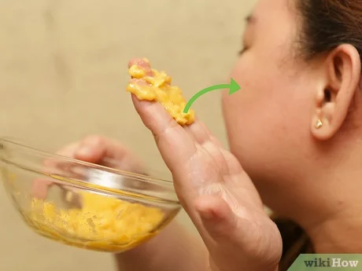

photo props!

artwork!

facemasks?!

ah yes... shoes!
A banana is an elongated, edible fruit – botanically a berry – produced by several kinds of large herbaceous flowering plants in the genus Musa. In some countries, bananas used for cooking may be called "plantains", distinguishing them from dessert bananas. The fruit is variable in size, color, and firmness, but is usually elongated and curved, with soft flesh rich in starch covered with a rind, which may be green, yellow, red, purple, or brown when ripe.
Raw bananas (not including the peel) are 75% water, 23% carbohydrates, 1% protein, and contain negligible fat. A 100-gram reference serving supplies 89 Calories, 31% of the US recommended Daily Value (DV) of vitamin B6, and moderate amounts of vitamin C, manganese and dietary fiber, with no other micronutrients in significant content
- wikipediaHere is a quote from a banana company's website:
Bananas are naturally fat and cholesterol free and a natural sweetener. What could be healthier than that? You can snack freely on bananas all day, every day, and never have to wonder, “are bananas good for you?” ever again.
| Country | Bananas | Plantains |
|---|---|---|
| India | 30.5 | |
| China | 11.2 | |
| Philippines | 6.1 | 3.1 |
| Colombia | 3.8 | 3.6 |
| Indonesia | 7.2 | |
| Ecuador | 6.3 | 0.8 |
| Brazil | 6.7 |
That's pretty rad 😎
But you may be asking: what are we supposed to do with all these bananas? Well, surely enough, there are countless delicious banana creations...
my 100% objective tier list:
If consuming bananas still isn't your cup of tea, do not fret! Lucky for you, bananas also serve as...
photo props!
artwork!
facemasks?!
ah yes... shoes!